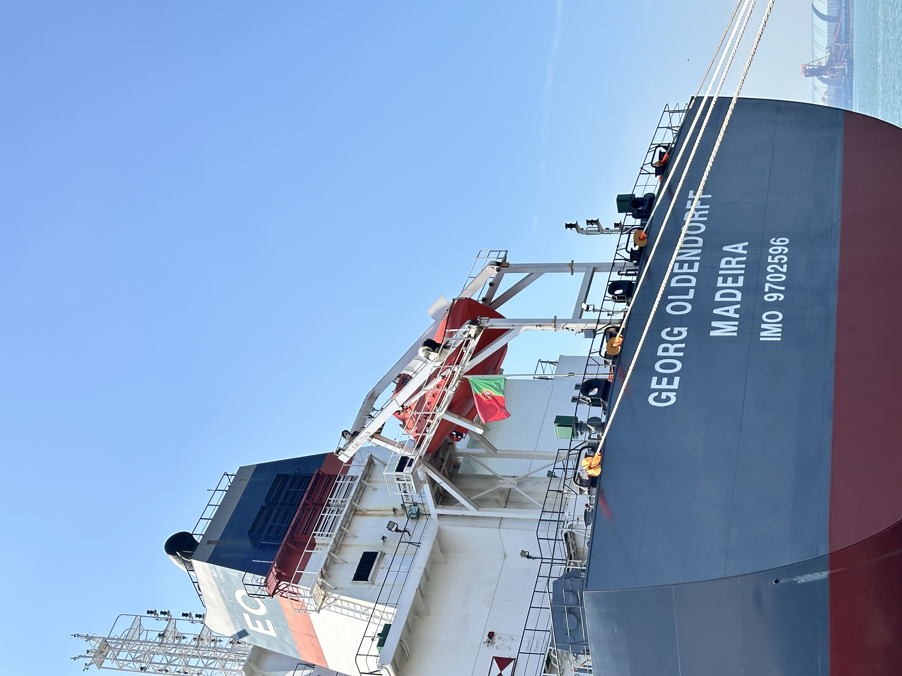
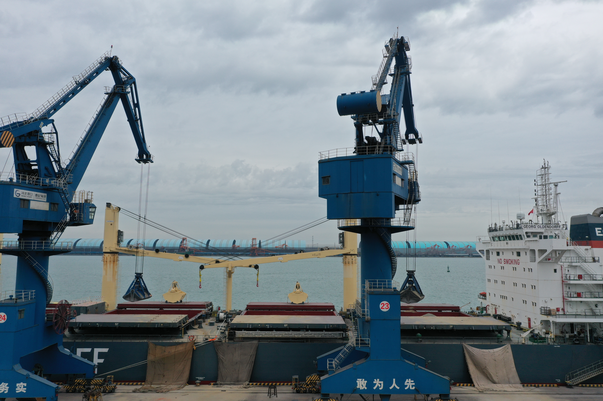

Why Longer Hauls and Dry Bulk STS Discipline Matter More for Cement and Slag Trade
Recent dry bulk signals point in the same direction. Drewry said Gulf disruption and longer rerouting are lifting tonne-mile demand, while INTERCARGO has issued the first dedicated dry bulk ship-to-ship transfer guidelines. For exporters of cement, clinker, GBFS and GGBFS, the message is clear: freight economics and execution discipline are moving closer to the center of trade competitiveness.
为什么更长航程与干散货 STS 执行纪律对水泥和矿渣贸易更重要
近期干散货市场的两条信号正在指向同一个方向。Drewry 认为海湾扰动与更长绕航正在抬升吨海里需求，而 INTERCARGO 刚刚发布首份专门面向干散货的船对船转运指南。对水泥、熟料、GBFS 和 GGBFS 出口商来说，信息很明确：运费经济性与执行纪律，正在更接近贸易竞争力的中心。

Two recent dry bulk updates are worth reading together. On 14 May 2026, Seatrade Maritime cited Drewry analysis showing that Gulf disruption and longer rerouting are supporting tonne-mile demand in dry bulk shipping. Less than a week later, on 20 May 2026, INTERCARGO published the first dedicated ship-to-ship transfer guidelines for bulk carriers. Taken together, these are not just shipping headlines. They suggest that for cementitious materials, route length and cargo-execution discipline are becoming more commercially important at the same time.
1. Longer hauls can change freight logic faster than product logic
According to the Drewry view reported by Seatrade Maritime, tensions in the Gulf risk disrupting nearly 30 million tonnes of dry bulk trade per month and more than 7% of global dry bulk shipping demand in tonne-mile terms. Even when trade does not stop completely, rerouting via longer passages such as the Cape of Good Hope can raise voyage time, tighten vessel supply and reshape freight spreads between origins. For cement, clinker and slag trades, that matters because these cargoes often compete on relatively tight delivered-cost logic rather than on wide product differentiation alone.
That means a supplier can be commercially right on material, yet temporarily weaker on route economics. Buyers may see the same cargo differently once freight, insurance, waiting time and discharge flexibility move together. In practical terms, exporters need to watch not only price levels, but also how route instability changes the full landed proposition across nearby and long-haul markets.

2. The new STS standard shows that execution quality is becoming a market variable
INTERCARGO’s new guidelines matter because dry bulk ship-to-ship transfer has been expanding into regions where draft limits, berth constraints or limited infrastructure make direct port handling less straightforward. The publication covers planning, risk assessment, maneuvering, fendering, cargo handling and emergency response. In other words, the industry is formalizing a part of execution that used to be handled with less common discipline than tanker shipping.
For cementitious cargoes, this is relevant beyond safety language. Cargo execution affects moisture exposure, contamination risk, laytime performance and confidence in meeting discharge requirements. Once logistics become more complex, buyers and chartering counterparts tend to prefer suppliers and operators who can explain not only what the cargo is, but also how reliably it can move through constrained logistics environments.
3. What cement, clinker and slag exporters should take from this
The combined message is straightforward. In a market shaped by rerouting, tighter vessel supply and more operational complexity, competitiveness is becoming a mix of material value, freight awareness and execution credibility. For GBFS and GGBFS exporters in particular, that means route planning, loading options, discharge flexibility and cargo-handling discipline may increasingly matter alongside quality and price. The suppliers who can manage both the material and the movement will be better positioned to keep trust when freight markets become noisy.

For SENLAN Trading, the practical takeaway is not to treat freight and operations as a background issue. In cross-border cementitious-material trade, the conversation is increasingly about the total lane solution: cargo quality, loading method, routing realism and discharge readiness. That is where repeat business is more likely to be built.
最近有两条干散货动态，放在一起看很值得。2026 年 5 月 14 日，Seatrade Maritime 引述 Drewry 分析称，海湾扰动与更长绕航正在支撑干散货航运的吨海里需求。不到一周后的 5 月 20 日，INTERCARGO 又发布了首份专门面向干散货船的船对船转运指南。把这两件事放在一起看，它们就不只是航运新闻，而是在提示市场：对于胶凝材料贸易来说，航程长度与货物执行纪律正在同时变得更具商业意义。
1. 更长航程改变运费逻辑的速度，可能快于产品逻辑本身
根据 Seatrade Maritime 引述的 Drewry 观点，海湾紧张局势可能扰动每月近 3000 万吨干散货贸易，按吨海里口径计算，影响超过全球干散货航运需求的 7%。即使贸易没有完全中断，只要船舶需要经由好望角等更长路径绕航，也会推高航次时间、收紧可用船吨，并重塑不同产地之间的运费价差。对于水泥、熟料和矿渣这类货种来说，这一点尤其重要，因为它们很多时候比拼的并不是巨大产品差异，而是相对紧的到岸成本逻辑。
这意味着，一个供应商在材料层面可能没有问题，但在航线经济性上却可能阶段性失去优势。当运费、保险、等泊时间和卸港灵活性同时变化时，买家眼中的同一批货，价值判断也会随之改变。更实际地说，出口商不只要盯着价格本身，还要盯住航线不稳定如何改变近洋和远洋市场里的完整到岸方案。
2. 新的 STS 标准说明执行质量正在变成市场变量
INTERCARGO 的这份新指南之所以重要，是因为干散货船对船转运正在扩展到越来越多受吃水、泊位或基础设施限制的区域，直接靠港操作不再总是顺畅。新文件覆盖了计划、风险评估、操船、护舷、货物处理和应急响应等环节。换句话说，行业正在把过去比油轮领域更少统一纪律的一部分执行流程，逐步制度化。
对胶凝材料货种来说，这件事的意义不只是安全层面。货物执行方式会影响受潮风险、污染风险、装卸时间表现以及能否满足卸港要求的信心。一旦物流链条更复杂，买家和租船相关方通常就会更偏好那些不仅能讲清“这是什么货”，还能讲清“这批货如何在受限物流环境中稳定执行”的供应商与运营方。
3. 水泥、熟料与矿渣出口商可以从中得到什么
把这两条信号合在一起，结论其实很直接：在一个受绕航、更紧船吨供给以及更复杂执行条件影响的市场里，竞争力正在变成材料价值、运费认知和执行可信度的组合。尤其对 GBFS 与 GGBFS 出口商来说，航线规划、装货方式、卸港灵活性以及货物操作纪律，未来都可能和质量与价格一样重要。真正更有优势的，会是那些既能把材料做好，也能把运输讲明白、执行稳的人。
对森蓝贸易来说，最实际的启示是：不要再把运费和操作执行当成纯背景变量。在跨境胶凝材料贸易里，客户越来越在意的是一整条航线方案：货物质量、装载方式、航线现实性以及卸港准备度。更容易带来复购合作的，往往正是这里。
Explore products or discuss your inquiry.
If this market signal is relevant to your sourcing plan, you can review our core product pages or contact us with laycan, quantity, target specification and loading method.
Request a quote